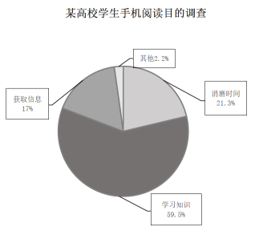

2020 年全国硕士研究生招生考试英语（二）
Section I Use of English
Directions:
Read the following text. Choose the best word(s) for each numbered blank and mark A, B, C or D on the ANSWER SHEET. (10 points)
Being a good parent is what every parent would like to be. But defining what it means to be a good parent is undoubtedly very 1 , particularly since children respond differently to the same style of parenting. A calm, rule-following child might respond better to a different sort of parenting than, 2 , a younger one.
3 , there’s another sort of parent that’s easier to 4 : a patient parent. Children of every age benefit from patient parenting. Still, 5 every parent would like to be patient, this is no easy 6 . Sometimes, parents get exhausted and are unable to maintain a 7 style with their kids. I understand this.
You’re only human, and sometimes your kids can 8 you just a little too far. And then the 9 happens: You lose your patience and either scream at your kids or say something that was too 10 and does nobody any good. You wish that you could 11 the clock and start over. We’ve all been there.
12 , even though it’s common, it’s vital to keep in mind that in a single moment of fatigue, you can say something to your child that you may 13 for a long time. This may not only do damage to your relationship with your child but also 14 your child’s self-esteem.
If you consistently lose your 15 with your kids, then you are modeling a lack of emotional control for your kids. We are all becoming increasingly aware of the 16 of modeling patience for the younger generation. This is a skill that will help them all throughout life. In fact, the ability to maintain emotional control when 17 by stress is one of the most significant of all life’s skills.
Certainly, it’s 18 to maintain patience at all times with your kids. A more practical goal is to try to be as calm as you can when faced with 19 situations involving your children. I can promise you this: As a result of working toward this goal, you and your children will benefit and 20 from stressful moments feeling better physically and emotionally.
Section II Reading Comprehension
Part A
Directions:
Read the following four texts. Answer the questions after each text by choosing A, B, C or D. Mark your answers on the ANSWER SHEET. (40 points)
Text 1
Rats and other animals need to be highly attuned to social signals from others so they can identify friends to cooperate with and enemies to avoid. To find out if this extends to non-living beings, Laleh Quinn at the University of California, San Diego, and her colleagues tested whether rats can detect social signals from robotic rats.
They housed eight adult rats with two types of robotic rat — one social and one asocial — for four days. The robot rats were quite minimalist, resembling a chunkier version of a computer mouse with wheels to move around and colourful markings.
During the experiment, the social robot rat followed the living rats around, played with the same toys, and opened cage doors to let trapped rats escape. Meanwhile, the asocial robot simply moved forwards and backwards and side to side.
Next, the researchers trapped the robots in cages and gave the rats the opportunity to release them by pressing a lever. Across 18 trials each, the living rats were 52 percent more likely on average to set the social robot free than the asocial one. This suggests that the rats perceived the social robot as a genuine social being. They may have bonded more with the social robot because it displayed behaviours like communal exploring and playing. This could lead to the rats better remembering having freed it earlier, and wanting the robot to return the favour when they get trapped, says Quinn.
“Rats have been shown to engage in multiple forms of reciprocal help and cooperation, including what is referred to as direct reciprocity — where a rat will help another rat that has previously helped them,” says Quinn.
The readiness of the rats to befriend the social robot was surprising given its minimal design. The robot was the same size as a regular rat but resembled a simple plastic box on wheels. “We’d assumed we’d have to give it a moving head and tail, facial features, and put a scent on it to make it smell like a real rat, but that wasn’t necessary,” says Janet Wiles at the University of Queensland in Australia, who helped with the research.
The finding shows how sensitive rats are to social cues, even when they come from basic robots. Similarly, children tend to treat robots as if they are fellow beings, even when they display only simple social signals. “We humans seem to be fascinated by robots, and it turns out other animals are too,” says Wiles.
21. Quinn and her colleagues conducted a test to see if rats can ____
22. What did the asocial robot do during the experiment?
23. According to Quinn, the rats released the social robot because they ____
24. Janet Wiles notes that rats ____
25. It can be learned from the text that rats ____
Text 2
It is true that CEO pay has gone up — top ones may make 300 times the pay of typical workers on average, and since the mid-1970s, CEO pay for large publicly traded American corporations has, by varying estimates, gone up by about 500%. The typical CEO of a top American corporation now makes about $18.9 million a year.
The best model for understanding the growth of CEO pay is that of limited CEO talent in a world where business opportunities for the top firms are growing rapidly. The efforts of America’s highest-earning 1% have been one of the more dynamic elements of the global economy. It’s not popular to say, but one reason their pay has gone up so much is that CEOs really have upped their game relative to many other workers in the U.S. economy.
Today’s CEO, at least for major American firms, must have many more skills than simply being able to “run the company.” CEOs must have a good sense of financial markets and maybe even how the company should trade in them. They also need better public relations skills than their predecessors, as the costs of even a minor slipup can be significant. Then there’s the fact that large American companies are much more globalized than ever before, with supply chains spread across a larger number of countries. To lead in that system requires knowledge that is fairly mind-boggling. Plus, virtually all major American companies are becoming tech companies, often with their own research and development. And beyond this, major CEOs still have to do all the day-to-day work they have always done.
The common idea that high CEO pay is mainly about ripping people off doesn’t explain history very well. By most measures, corporate governance has become a lot tighter and more rigorous since the 1970s. Yet it is principally during this period of stronger governance that CEO pay has been high and rising. That suggests it is in the broader corporate interest to recruit top candidates for increasingly tough jobs.
Furthermore, the highest CEO salaries are paid to outside candidates, not to the cozy insider picks, another sign that high CEO pay is not some kind of depredation at the expense of the rest of the company. And the stock market reacts positively when companies tie CEO pay to, say, stock prices, a sign that those practices build up corporate value not just for the CEO.
26. Which of the following has contributed to CEO pay rise?
27. Compared with their predecessors, today’s CEOs are required to ____
28. CEO pay has been rising since the 1970s despite ____
29. High CEO pay can be justified by the fact that it helps ____
30. The most suitable title for this text would be ____
Text 3
Madrid was hailed as a public health guiding light last November when it rolled out ambitious restrictions on the most polluting cars. Seven months and one election day later, a new conservative city council suspended enforcement of the clean air zone, a first step toward its possible termination. Mayor José Luis Martínez-Almeida made opposition to the zone a centrepiece of his election campaign, despite its success in improving air quality. A judge has now overruled the city’s decision to stop levying fines, ordering them restored. But with legal battles ahead, the zone’s future looks uncertain at best.
Madrid’s back and forth on clean air is a pointed reminder of the limits to the patchwork, city-by-city approach that characterises efforts on air pollution across Europe, Britain very much included.
Among other weaknesses, the measures cities must employ when left to tackle dirty air on their own are politically controversial, and therefore vulnerable. That’s because they inevitably put the costs of cleaning the air on to individual drivers — who must pay fees or buy better vehicles — rather than on to the car manufacturers whose cheating is the real cause of our toxic pollution.
It’s not hard to imagine a similar reversal happening in London. The new ultra-low emission zone (Ulez) is likely to be a big issue in next year’s mayoral election. And if Sadiq Khan wins and extends it to the North and South Circular roads in 2021 as he intends, it is sure to spark intense opposition from the far larger number of motorists who will then be affected.
It’s not that measures such as London’s Ulez are useless. Far from it. Local officials are using the levers that are available to them to safeguard residents’ health in the face of a serious threat. The zones do deliver some improvements to air quality, and the science tells us that means real health benefits.
But mayors and councillors can only do so much about a problem that is far bigger than any one city or town. They are acting because national governments — Britain’s and others across Europe — have failed to do so.
Restrictions that keep highly polluting cars out of certain areas — city centres, “school streets”, even individual roads — are a response to the absence of a larger effort to properly enforce existing regulations and require auto companies to bring their vehicles into compliance. Wales has introduced special low speed limits to minimise pollution. We’re doing everything but insist that manufacturers clean up their cars.
31. Which of the following is true about Madrid’s clean air zone?
32. Which is considered a weakness of the city-level measures to tackle dirty air?
33. The author believes that the extension of London’s Ulez will ____
34. Who does the author think should have addressed the problem?
35. It can be learned from the last paragraph that auto companies ____
Text 4
Now that members of Generation Z are graduating college this spring — the most commonly-accepted definition says this generation was born after 1995, give or take a year — the attention has been rising steadily in recent weeks. Gen Zs are about to hit the streets looking for work in a labor market that’s tighter than it’s been in decades. And employers are planning on hiring about 17 percent more new graduates for jobs in the U.S. this year than last, according to a survey conducted by the National Association of Colleges and Employers. Everybody wants to know how the people who will soon inhabit those empty office cubicles will differ from those who came before them.
If “entitled” is the most common adjective, fairly or not, applied to millennials (those born between 1981 and 1995), the catchwords for Generation Z are practical and cautious. According to the career counselors and experts who study them, Generation Zs are clear-eyed, economic pragmatists. Despite graduating into the best economy in the past 50 years, Gen Zs know what an economic train wreck looks like. They were impressionable kids during the crash of 2008, when many of their parents lost their jobs or their life savings or both. They aren’t interested in taking any chances. The booming economy seems to have done little to assuage this underlying generational sense of anxious urgency, especially for those who have college debt. College loan balances in the U.S. now stand at a record $1.5 trillion, according to the Federal Reserve.
One survey from Accenture found that 88 percent of graduating seniors this year chose their major with a job in mind. In a 2019 survey of University of Georgia students, meanwhile, the career office found the most desirable trait in a future employer was the ability to offer secure employment (followed by professional development and training, and then inspiring purpose). Job security or stability was the second most important career goal (work-life balance was number one), followed by a sense of being dedicated to a cause or to feel good about serving the greater good.
That’s a big change from the previous generation. “Millennials wanted more flexibility in their lives,” notes Tanya Michelsen, Associate Director of YouthSight, a UK-based brand manager that conducts regular 60-day surveys of British youth, in findings that might just as well apply to American youth. “Generation Zs are looking for more certainty and stability, because of the rise of the gig economy. They have trouble seeing a financial future and they are quite risk averse.”
36. Generation Zs graduating college this spring ____
37. Generation Zs are keenly aware ____
38. The word “assuage” (Line 8, Para.2) is closest in meaning to ____.
39. It can be learned from Paragraph 3 that Generation Zs ____
40. Michelsen thinks that compared with millennials, Generation Zs are ____
Part B
Directions:
Read the following text and answer the questions by choosing the most suitable subheading from the list A-G for each numbered paragraphs (41-45). There are two extra subheadings which you do not need to use. Mark your answers on the ANSWER SHEET. (10 points)
Five Ways to Win Over Everyone in the Office
Is it possible to like everyone in your office? Think about how tough it is to get together 15 people, much less 50, who all get along perfectly. But unlike in friendships, you need coworkers. You work with them every day, and you depend on them just as they depend on you. Here are some ways that you can get the whole office on your side.
41. _________________________
If you have a bone to pick with someone in your workplace, you may try to stay tight-lipped around them. But you won’t be helping either one of you. A Harvard Business School study found that observers consistently rated those who were frank about themselves more highly, while those who hid lost trustworthiness. The lesson is not that you should make your personal life an open book, but rather, when given the option to offer up details about yourself or painstakingly conceal them, you should just be honest.
42. _________________________
Just as important as being honest about yourself is being receptive to others. We often feel the need to tell others how we feel, whether it’s a concern about a project, a stray thought, or a compliment. Those are all valid, but you need to take time to hear out your coworkers, too. In fact, rushing to get your own ideas out there can cause colleagues to feel you don’t value their opinions. Do your best to engage coworkers in a genuine, back-and-forth conversation, rather than prioritizing your own thoughts.
43. _________________________
It’s common to have a “cubicle mate” or special confidant in a work setting. But in addition to those trusted coworkers, you should expand your horizons and find out about all the people around you. Use your lunch and coffee breaks to meet up with colleagues you don’t always see. Find out about their lives and interests beyond the job. It requires minimal effort and goes a long way. This will help to grow your internal network, in addition to being a nice break in the work day.
44. _________________________
Positive feedback is important for anyone to hear. And you don’t have to be someone’s boss to tell them they did an exceptional job on a particular project. This will help engender good will in others. But don’t overdo it or be fake about it. One study found that people responded best to comments that shifted from negative to positive, possibly because it suggested they had won somebody over.
45. _________________________
This one may be a bit more difficult to pull off, but it can go a long way to achieving results. Remember in dealing with any coworker what they appreciate from an interaction. Watch out for how they verbalize with others. Some people like small talk in a meeting before digging into important matters, while other are more straightforward. Jokes that work on one person won’t necessarily land with another. So, adapt your style accordingly to type. Consider the person that you’re dealing with in advance and what will get you to your desired outcome.
Section III Translation
46. Directions:
Translate the following text into Chinese. Write your translation on the ANSWER SHEET. (15 points)
It’s almost impossible to go through life without experiencing some kind of failure. But, the wonderful thing about failure is that it’s entirely up to us to decide how to look at it.
We can choose to see failure as “the end of the world.” Or, we can look at failure as the incredible learning experience that it often is. Every time we fail at something, we can choose to look for the lesson we’re meant to learn. These lessons are very important; they’re how we grow, and how we keep from making that same mistake again. Failures stop us only if we let them.
Failure can also teach us things about ourselves that we would never have learned otherwise. For instance, failure can help you discover how strong a person you are. Failing at something can help you discover your truest friends, or help you find unexpected motivation to succeed.
Section IV Writing
Part A
47. Directions:
Suppose you are planning a tour of a historical site for a group of international students. Write them an email to
1) tell them about the site, and
2) give them some tips for the tour.
You should write about 100 words on the ANSWER SHEET.
Do not use your own name. Use “Li Ming” instead. (10 points)
Part B
48. Directions:
Write an essay based on the chart below. In your writing, you should
1) interpret the chart, and
2) give your comments.
You should write about 150 words on the ANSWER SHEET. (15 points)
